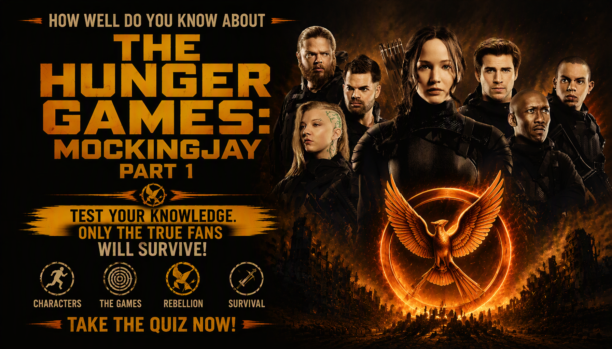

The Hunger Games: Mockingjay – Part 1 Quiz
Think you can survive the rebellion? Test your knowledge of Katniss, Peeta, District 13, the victors, the Capitol, the rebellion and the fight against President Snow from The Hunger Games: Mockingjay – Part 1.
Ready? See how much you remember about Katniss, the Mockingjay and the rebellion.
This quiz contains spoilers for The Hunger Games: Mockingjay – Part 1.

ABOUT THE QUIZ
The Hunger Games: Mockingjay – Part 1 Movie Quiz is a 25-question trivia challenge based on the 2014 science-fiction adventure film The Hunger Games: Mockingjay – Part 1. The story follows Katniss Everdeen as she becomes the symbol of the rebellion against the Capitol and President Snow.
The movie continues Katniss's story after the destruction of the Hunger Games arena. She is taken to District 13, where the rebellion prepares for its fight against the Capitol while Peeta remains in the Capitol's hands.
This quiz focuses on characters, locations, propaganda missions, important events, relationships and major story details from Mockingjay – Part 1. If you remember Katniss's transformation into the Mockingjay and the rebellion's struggle against President Snow, this quiz gives you a chance to test your memory.
MOVIE DETAILS
Release year: 2014
Director: Francis Lawrence
Genre: Science fiction, adventure, action and dystopian drama
Main setting: District 13, District 8, the Capitol and other locations connected to the rebellion
Main character: Katniss Everdeen, played by Jennifer Lawrence
Key conflict: The rebellion's fight against the Capitol and President Snow
Major symbol: The Mockingjay, which becomes a symbol of the rebellion
HOW THE QUIZ WORKS
The quiz contains 25 questions. Every question has four possible choices, but only one answer is correct. Read each question carefully and select the answer you believe is correct.
Each correct answer gives you 1 point, while an incorrect answer gives you 0 points. With 25 questions in total, your correct answers are converted into a final percentage.
Your final result represents how many questions you answered correctly. The result categories are based on your performance across the 25 questions.
Quiz Navigation
Starting the Quiz
Select START QUIZ on the opening screen to begin. The first question will appear with four possible answers.
Selecting an Answer
Read the question and all four choices before making your selection. Once you choose an answer, continue to the next question.
Next and Back Buttons
Use Next to move forward through the questions. The Back button allows you to return to an earlier question and review or change your selection. Your question number and progress are displayed as you move through the quiz.
Finishing the Quiz
Continue until all 25 questions have been answered. When you reach the end, submit your answers to finish the quiz and view your final score, percentage and movie knowledge result.
Try Again and Challenge Friends
After viewing your result, select TRY AGAIN to replay the quiz and attempt a higher score. You can also use SHARE MY RESULT or CHALLENGE YOUR FRIENDS to share your result.
FAQ
How many questions are in the quiz?
There are 25 questions in total, and every question has four possible choices.
What is the maximum score?
The maximum result is 100%. Each correct answer contributes 1 point before the score is converted into a percentage.
What topics are covered?
The quiz covers The Hunger Games: Mockingjay – Part 1, including Katniss, Peeta, Prim, Finnick, Beetee, Johanna, Cressida, Plutarch, Alma Coin, Boggs, District 13, the Capitol, the rebellion, propaganda missions and major story events.
Is this quiz only about the characters?
No. Character questions are only part of the quiz. Other questions cover District 13, the rebellion, propaganda, locations, the Capitol, important events and other details from the movie.
Which movie does this quiz cover?
This quiz focuses on the 2014 science-fiction adventure film The Hunger Games: Mockingjay – Part 1, directed by Francis Lawrence and starring Jennifer Lawrence as Katniss Everdeen.
Do I need to watch the movie before taking the quiz?
It is recommended. The questions are based on events, characters and details from the movie, including information that may be difficult to answer without having watched it.
What does my score mean?
Your percentage shows how many of the 25 questions you answered correctly. A higher percentage means you correctly remembered more of the movie's details.
Can I take the quiz again?
Yes. Select TRY AGAIN after completing the quiz to start another attempt and try to improve your score.
Can I challenge my friends?
Yes. Select CHALLENGE YOUR FRIENDS after completing the quiz to share the challenge and see whether your friends can beat your score.
Spoiler Warning
This quiz contains spoilers for The Hunger Games: Mockingjay – Part 1. Questions may reveal important details about Katniss, Peeta, Prim, Finnick, Beetee, Johanna, District 13, the rebellion, the Capitol, propaganda missions and other major events.
If you have not watched The Hunger Games: Mockingjay – Part 1, consider watching the movie before taking the quiz to avoid having important story details revealed.